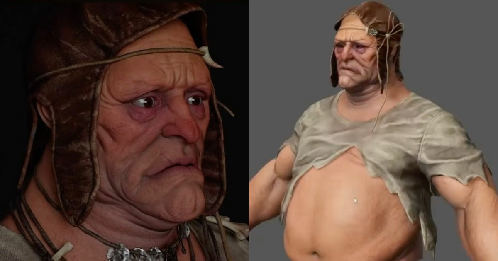

角色製作課程概覽：串接雕刻、服裝、重拓撲與貼圖
80 Level 介紹 fantastic mr frog 在 Wingfox 的中高階角色課程，涵蓋 Blender、ZBrush、Marvelous Designer、Substance 3D Painter 與 Marmoset Toolbag。原文列出超過 50 小時影片；這是課程內容介紹，並非學習成果或遊戲整合品質的獨立評測。

角色製作 ★★★★★
完整分析
從基礎網格到可烘焙資產
課綱從簡單 base mesh 與 ZBrush 比例雕刻開始，服裝使用 Marvelous Designer 製作，再於 Blender 重拓撲；角色高模也經重拓撲與 UV 展開，最後在 Marmoset Toolbag 準備烘焙貼圖。這是原文列出的教學順序，沒有公開逐步參數。
貼圖與展示串成完整案例
文章說課程會處理角色及衣物細節的取捨，烘焙完成後轉到 Substance 3D Painter 製作貼圖，再回 Marmoset Toolbag 做最終渲染。可推論其價值在於看見多套軟體如何銜接，而不是只示範某一個雕刻工具。
適用程度與宣傳資訊界線
課程面向中階及進階藝術家，內容包含超過 50 小時影片、額外資源與檔案存取。這些是文章對課程規格的介紹，沒有附學生實作、模型效能或實際引擎整合測試，因此不能單憑課程名稱保證產出符合個別專案規格。
BRIEF｜來源已驗證；證據深度較有限，完整分析會明確區分已知資訊與待驗證事項。